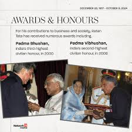

Awards and Achievements
- Padma Bhushan (2008) - India's third-highest civilian award
- Padma Vibhushan (2014) - India's second-highest civilian award
- Honorary Doctorate from University of Oxford (2007)
- Forbes India Leadership Award (2011)